Токио · Мэгуро · отель
Hotel Gajoen Tokyo: отель-музей в Мэгуро, где собрано 2500 произведений японского искусства
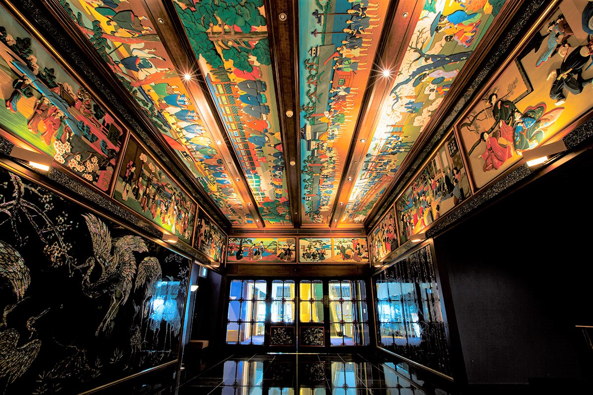
В Мэгуро, в трёх минутах от станции, стоит отель, который называют музеем японской красоты. Около 2500 картин и предметов прикладного искусства собирали здесь с 1930-х годов, когда на этом месте открылся роскошный ресторан.
История
От ресторана к отелю-музею
В 1928 году предприниматель Рикидзо Хосокава перестроил свой дом в токийском районе Сибаура в дорогой ресторан японской кухни «Сибаура Гадзёэн». В 1931 году ресторан переехал в Мэгуро и стал называться «Мэгуро Гадзёэн». Хосокава хотел, чтобы гости наслаждались не только едой, но и тем, что видят вокруг, и чтобы место казалось им сном, который не забывается. Он пригласил художников своего времени расписать стены и потолки и украсить залы резьбой.
Так здесь собралось около 700 картин в стиле нихонга, а вместе с предметами прикладного искусства около 2500 работ. Хосокава давал мастерам самые дорогие минеральные краски, поэтому цвета сохранились до наших дней. Место прозвали «дворцом морского дракона эпохи Сёва», по сказочному подводному дворцу из японских легенд.
В 1938 году «Мэгуро Гадзёэн» стал первым в Японии комплексом, где можно было провести всю свадьбу от церемонии до банкета. В 2017 году, после обновления номеров, он получил имя Hotel Gajoen Tokyo и девиз «отель-музей японской красоты». Участок в тихом Мэгуро занимает около 37 000 квадратных метров.
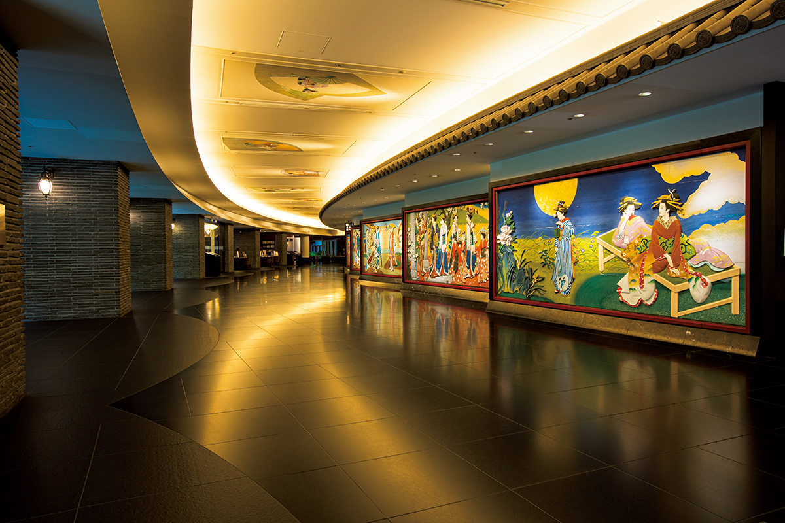
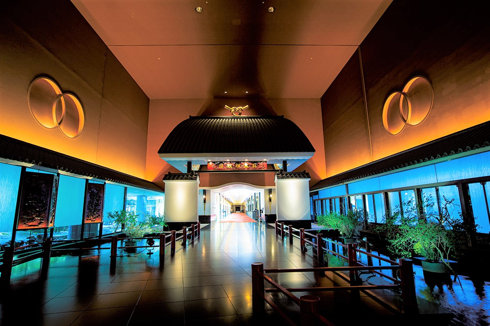
Основа здешней красоты в японском вкусе, унаследованном от эпохи Эдо: перламутр на лаке, яркие картины нихонга, раскрашенные резные доски. Всё это можно разглядывать повсюду, от арочной галереи до дверей лифта.
Номера
После роскоши тишина
Пышность залов остаётся внизу. На этаже с номерами всё иначе: простые и строгие интерьеры навеяны чайной церемонией, а их тему отель описывает словами «гармония, уважение, чистота сердца».
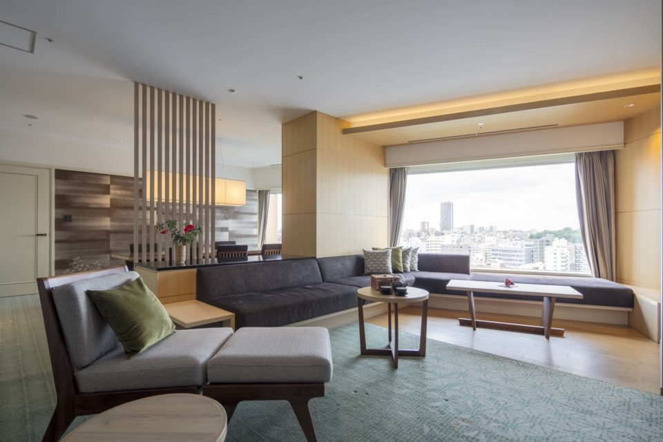
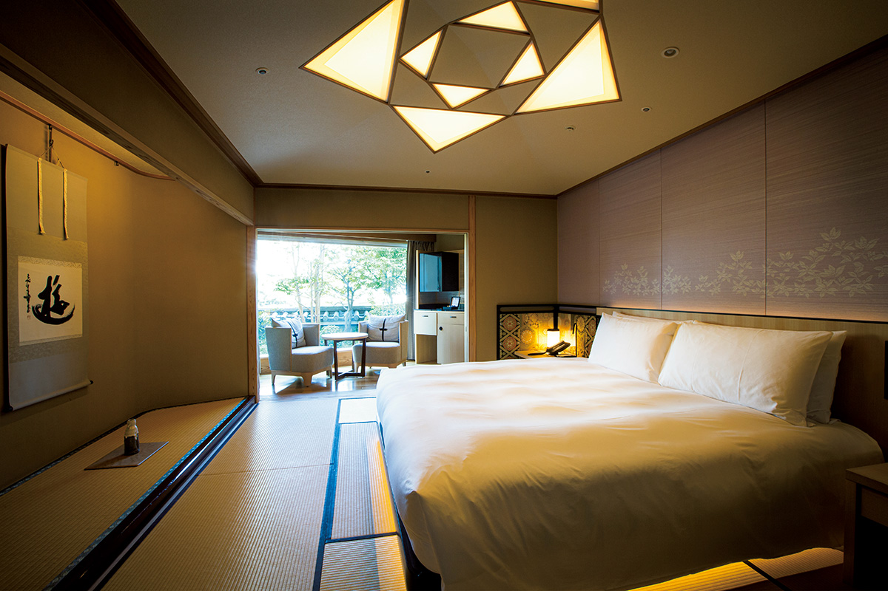
В 2020 году все 60 номеров были люксами площадью от 80 квадратных метров, с паровой сауной и джакузи. Отель входил в Small Luxury Hotels of the World, объединение независимых небольших отелей класса люкс. В номерах стояли посуда для чая и двухъярусные шкатулки из криптомерии Акиты с решётчатым узором кумико.
Двенадцать японских номеров переделали в 2018 году по образу чайного домика: продумали свет и связь с природой. Изголовья обтянуты парчой нисидзин по мотивам низкой ширмы, которую ставят у очага на чайной церемонии, а вокруг традиционные японские узоры и травы.
В 2020 году гости завтракали в лаунже «Ока» только для проживающих: из окон видна река Мэгуро, в ясную погоду Фудзи, а чашку можно было выбрать из керамики Сигараки, Кутани, Мино и Арита. Вечером можно было посидеть с книгой или блокнотом в библиотечном лаунже «Цубаки».
Рестораны
Семь залов под одной крышей
В 2019 году в отеле работали семь ресторанов: японская, китайская и итальянская кухня, гриль, кафе и бар. Гриль KANADE TERRACE на первом этаже, за воротами «Манэки-но даймон», готовил американскую кухню с японскими продуктами и приёмами.
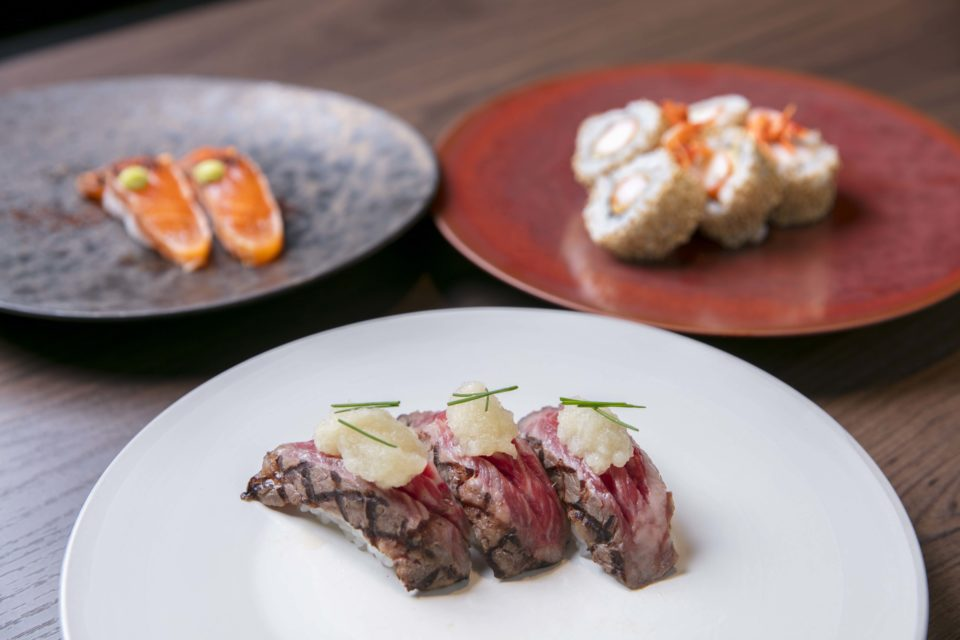
Китайский ресторан «Сюнъюки» строит кухню на идее, что еда и лекарство имеют один исток. В японском ресторане «Тофутэй» старинные приёмы подают по-современному, а отдельные кабинеты устроены как дом под соломенной крышей.
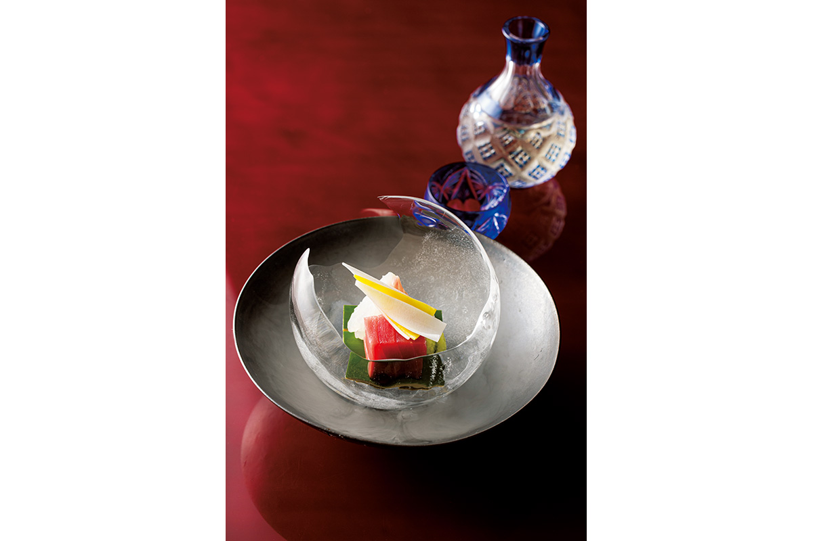
Искусство
Залы, куда ведёт экскурсия
Многие залы открыты только гостям ресторанов и банкетов. Для проживающих отель проводил «Арт-тур Гадзёэн»: в 2019 и 2020 годах экскурсия начиналась в 9:00, шла около полутора часов, была бесплатной, и записаться надо было на стойке регистрации до 17:00 накануне. Многие любители искусства, по словам отеля, приезжали в отель ради неё.
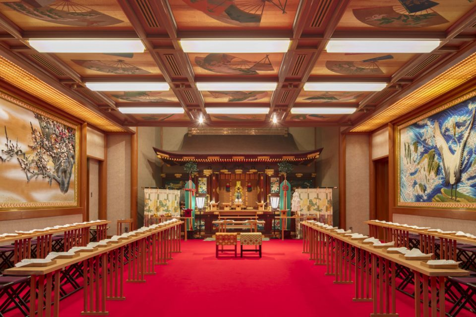
Залы называются по именам художников, которые их расписали. Например, в зале «Тикуха» стены и потолок покрыты перламутром по рисункам Тикухи Отакэ (1878–1936), мастера нихонга, который работал над убранством ресторана с самого начала.
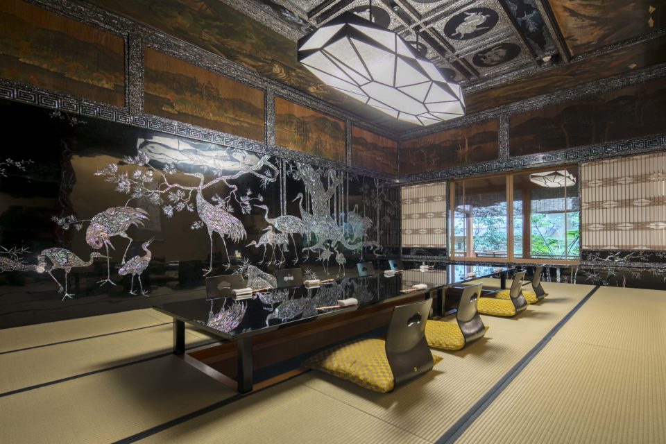
В китайском ресторане «Сюнъюки» два кабинета спроектировал Джозайя Кондер (1852–1920), английский архитектор, которого называют отцом современной японской архитектуры. В кабинете «Гёкудзё» стены целиком занимают картины Гёкудзё Масуды (1881–1955), мастера портретов красавиц. Здесь же стоит вращающийся стол с перламутром, который считают старейшим из сохранившихся.
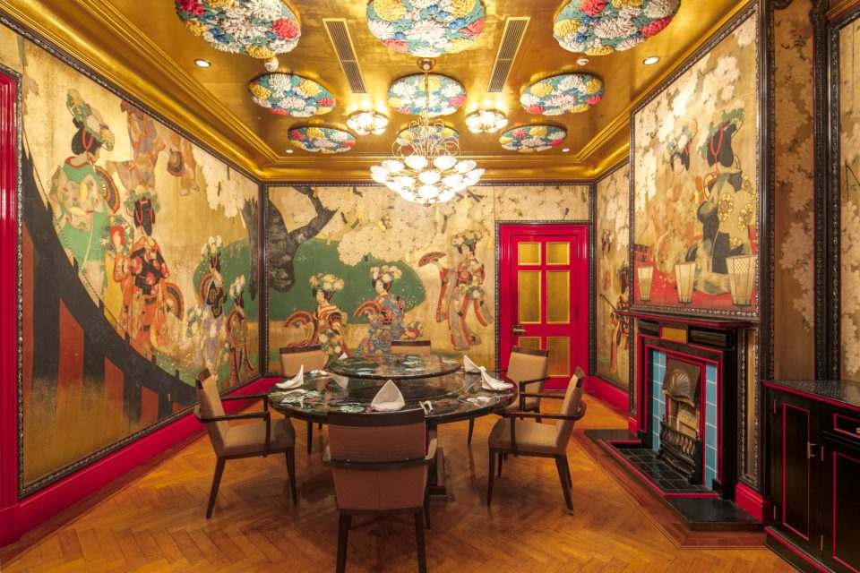
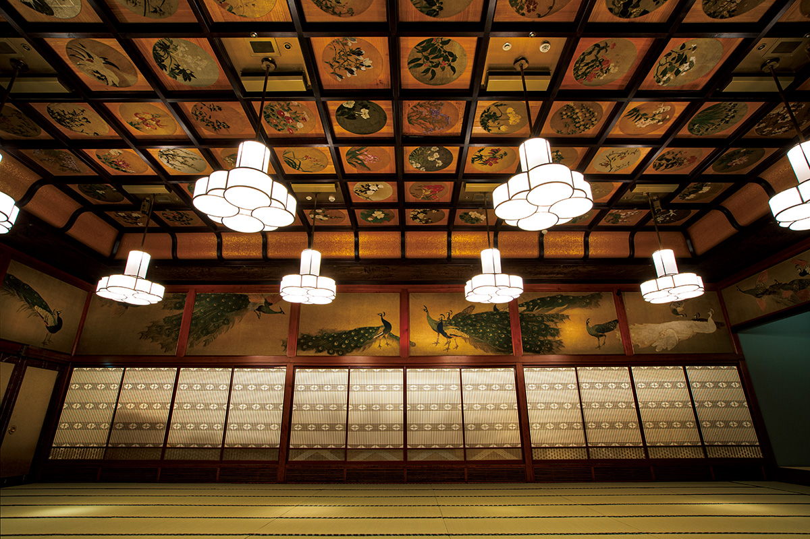
Наследие
«Сто ступеней»
Деревянный корпус «Хякудан-кайдан», то есть «Сто ступеней», построили в 1935 году. Это единственное деревянное здание комплекса, которое сохранилось, и памятник культуры под охраной Токио. Лестница в 99 ступеней соединяет залы, где ещё чувствуется время ресторана. В 2019 году внутрь можно было попасть на выставках или на экскурсиях с обедом.
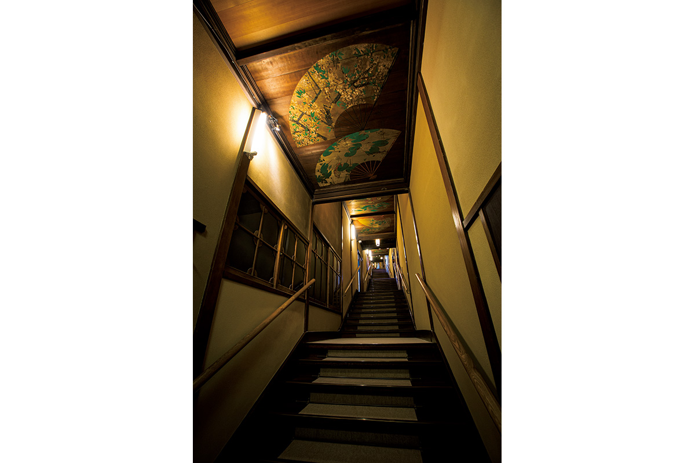
В октябре 2025 года отель закрылся, а 27 июля 2026 года снова принял гостей под именем Gajoen Tokyo; к концу 2026 года он должен войти в сеть LXR Hotels & Resorts компании Hilton. Корпус «Сто ступеней» с 1 октября 2026 года по 30 марта 2027 года открыт для публики.
Hotel Gajoen Tokyo
- Адрес
- Токио, Мэгуро, Симо-Мэгуро, 1-8-1
- Телефон
- +81 3-3491-4111
- Номера
- 60
- Цены / Вход
- ночь с завтраком от 66 000 иен (с налогом и сервисным сбором, 2020 год)
- Заезд / выезд
- 15:00 / 12:00
- Как добраться
- 3 минуты пешком от станции Мэгуро (JR и другие линии); на машине около 3 минут от съезда Мэгуро столичной скоростной дороги
- Сайт
- hilton.com